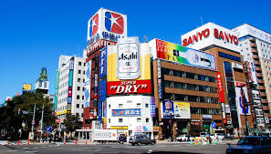

Sapporo Japan

.jpg)
.jpg)
Japan is know for its beautiful sites, amazing food and of course the weird and wacky.
My name is Clayton and I will be your guide of Sapporo Japan.
Now why should visit Sapporo? well I'm gonna give few reasons why
-
Tour the Ishiya Chocolate Factory
If you want to do something a little sweet on your trip to Sapporo then you may want to visit the Ishiya Chocolate Factory.
You can take a tour of the facility and find out how they make the chocolate here, and their signature treat is the white chocolate known as ‘shiroi koibito’ which is a specialty of Hokkaido.
You can also dine in the onsite restaurant and enjoy a cake buffet as well as check out a robot show and a toy museum.
If you are travelling with younger visitors then this is definitely one of the top attractions in the city that is not to be missed.
-
Attend Sapporo Snow Festival
Sapporo Snow Festival is the main social event in the city and is known for its amazing ice sculpture competition.
The festival takes place every year at Odori Koen and starts at the beginning of February.
Visiting ice sculptors come from all over the world and you can also find attractions for children such as ice castles and igloos.
If possible come at night when the ice sculptures are illuminated with different colored lights, but keep in mind that it can also get rather crowded.
-
Walk around Asahiyama Park
Asahiyama Park is one of the prettiest of its kind in the city and is covered in a gorgeous flower garden which is a riot of color throughout the year.
The park is popular with amorous young couples, and the best time to come here is in the springtime when you can enjoy the gorgeous cherry blossoms.
If you are here in the autumn then you can also take in the burnt orange fall colors and this makes a nice spot to get away from it all and find a corner of calm in Sapporo.
-
Catch a game at Sapporo Dome
Sapporo Dome was the host of the FIFA World Cup in 2002 and now it serves as the home ground of a range of baseball teams such as the Hokkaido Nippon Ham Fighters.
You may not immediately think of baseball when you think of Japan, but you will even find traditional snacks like hot dogs here and you can catch a number of games throughout the season.
If you are a baseball fan or just fancy seeing something a little different in Hokkaido then this is an excellent choice.
-
Check out the Hokkaido Museum of Modern Art
Art lovers should make sure not to miss the Hokkaido Museum of Modern Art which sits in the middle of a pretty park with rambling lawns.
The museum is dedicated to showcasing modern works of art which were made primarily by Japanese artists but you will also find some Western works on display as well.
They also have rotating galleries of visiting artists so make sure you swing by and check out what’s on when you are in town.
Hopefully this made you choose the great country Japan as your next holiday destinaton
Contact